Two countries, one week. Drone-blue water, medieval cliff cities, longevity meals, and the Mediterranean's most diverse stretch of coast — sailed privately on a catamaran built for stillness.
A week that starts in Italy and ends in France without ever boarding a plane. Sardinia's Costa Smeralda and the Maddalena archipelago on one half — Corsica's medieval Bonifacio and the Lavezzi islands on the other.
Slow mornings. Soft anchorages. Local food. Yoga on the bow at sunrise, Blue Zone cooking ashore, a saltwater spa overlooking Caprera, and the kind of evening that runs late on its own.
Where We Sail
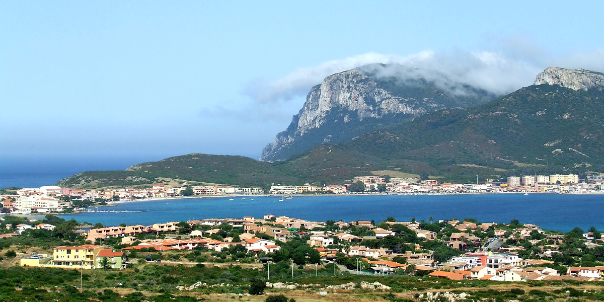
A sheltered cove on the north-east tip of Sardinia. The chef opens the week here — dinner at anchor, only the boat creaking against the swell.
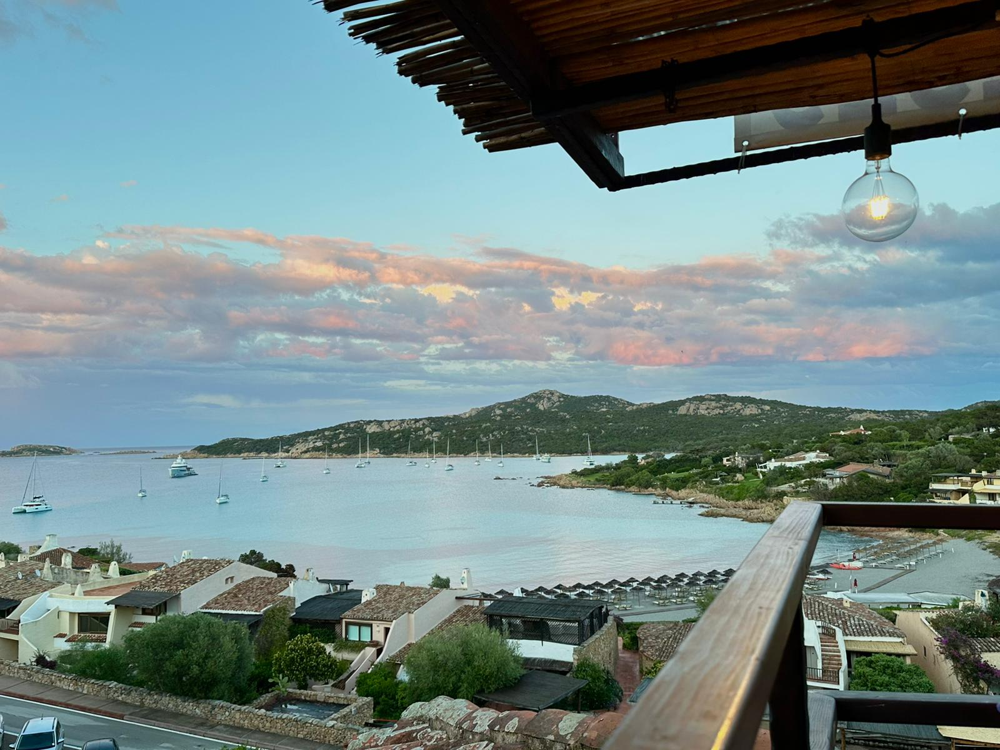
A small fishing town tucked into the Bay of Arzachena. Dinner ashore — fresh fish, the kind of evening that runs late on its own.
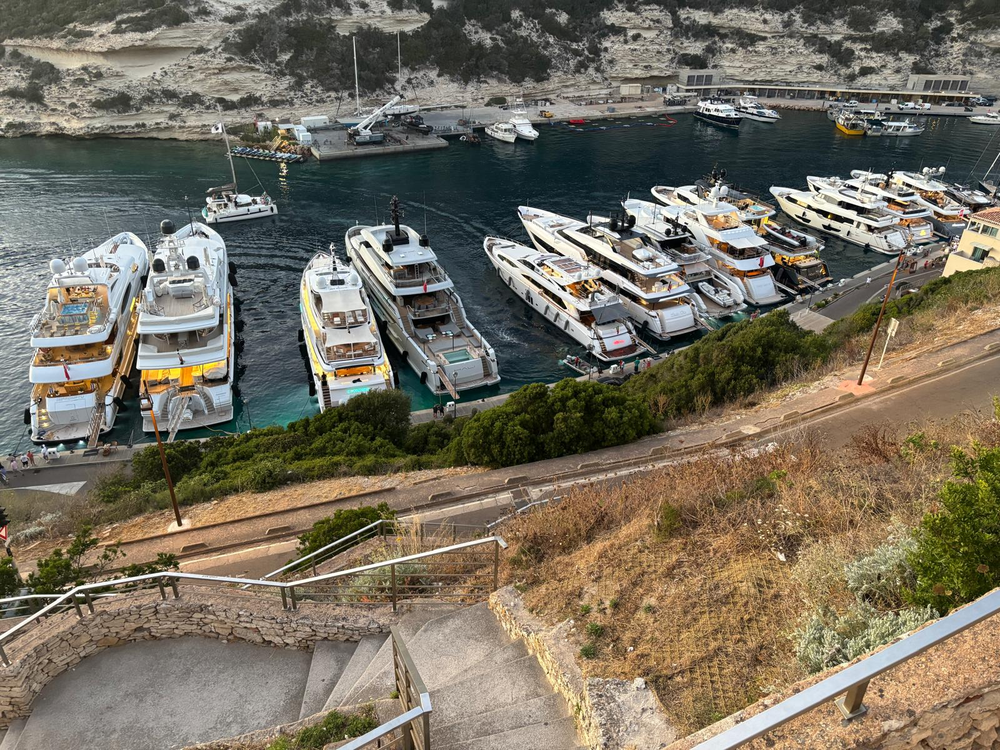
One of the most dramatic marina entrances in the world. Limestone cliffs, a medieval citadel, the cliff city told properly by a local guide.
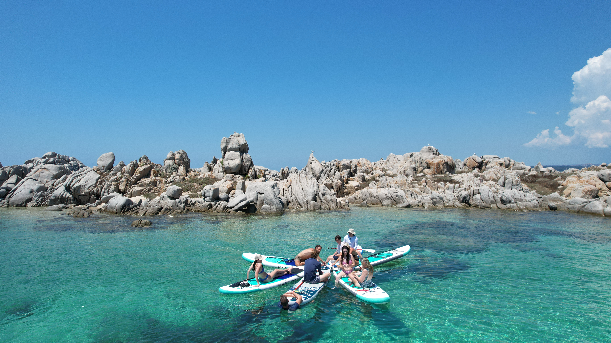
Granite formations, white-sand coves, the best snorkel cove of the week. Stop here on the way back from Corsica.
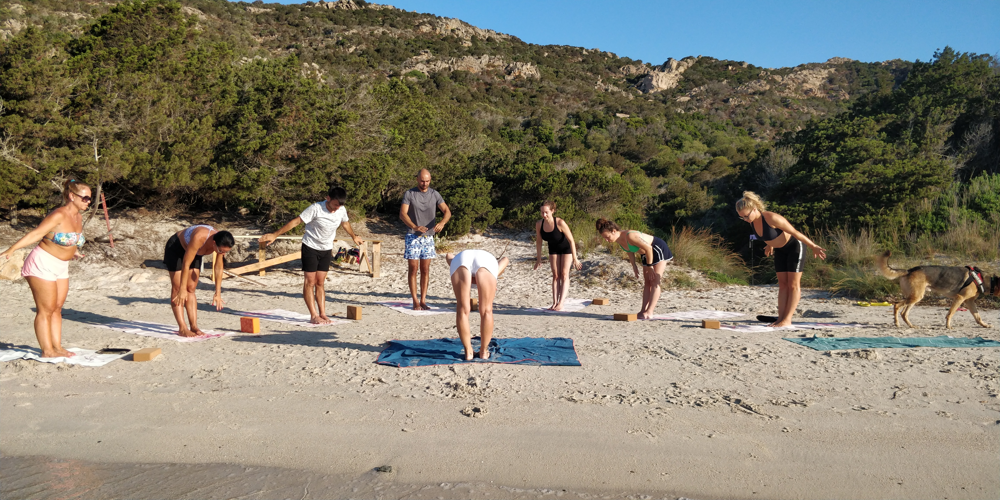
Small uninhabited island in the Maddalena archipelago, ringed with white-sand coves. Morning yoga on the beach as the bay starts to wake.
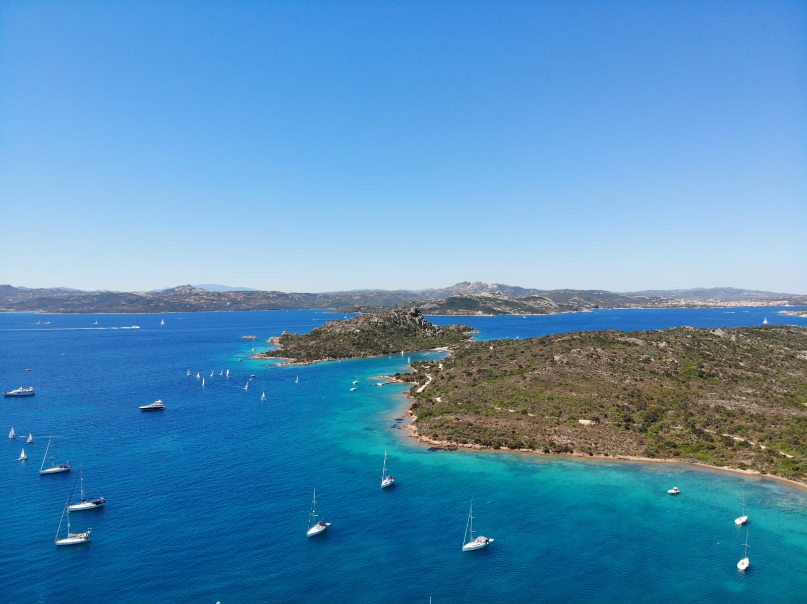
The wildest island in the archipelago, a nature reserve with no roads to speak of. Chef-led farewell feast at anchor, sun setting pink over granite.
Your 7-Day Journey
Embark Porto Rotondo marina (25 minutes from Olbia airport). Sail north to Golfo Aranci for the first night at anchor. Chef opens the week with dinner on board, stargazing on the bow.
Morning yoga on a quiet beach. Sail down the Costa Smeralda to a private anchorage off Liscia di Vacca. Dinner ashore in Porto Cervo or chef on board — your call.
Morning sail to Capo d'Orso. Outdoor saltwater pools and a treatment of choice at the Thalasso resort, lunch on the cliff terrace. Evening sail to Cannigione for a slow dinner ashore.
Cross the Strait of Bonifacio into French Corsica. Arrive Bonifacio mid-afternoon. Walking tour of the medieval citadel with a local guide, dinner at Da Passano (modern Corsican wine bar).
Morning swim and snorkel at Lavezzi's granite coves. Sail back across the strait, anchor in the Maddalena archipelago. Dinner ashore at the marina town.
Sunrise yoga at Spargi. Slow day exploring the archipelago's quieter coves. End the day at anchor in a Caprera bay — chef cooks the farewell feast as the sun sets pink over the rocks.
Morning hike on Caprera's wild trails to a viewpoint over the bay. Optional Sardinian vineyard tasting on the return. Sail south back to Porto Rotondo. Last night on the boat, off by Saturday morning.
Your Home on the Water
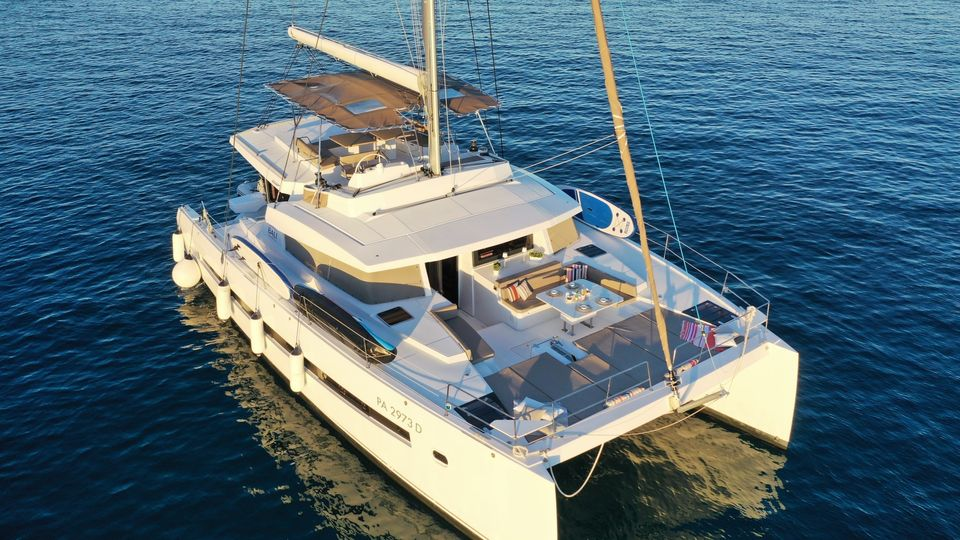
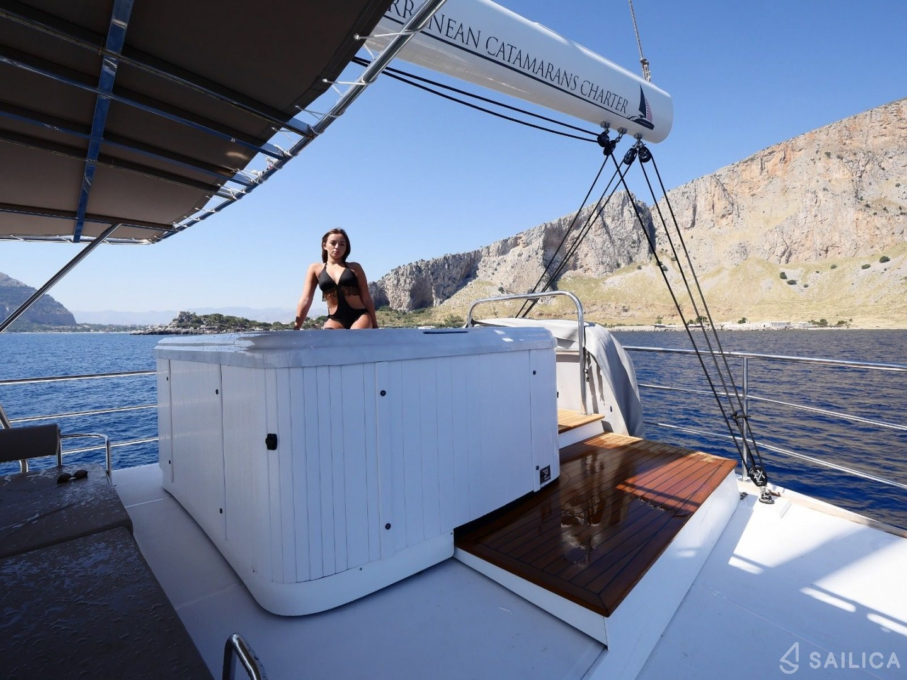
Flotilla option: Run two boats side-by-side for 16-20 guests across both — natural women-only / co-ed split, two price tiers in one trip, same week, same route.
Excursions
All excursions sit on top of the base trip — guests opt in to whichever fits their week. Prices are pass-through, no markup. Caprera hike included in the base trip.
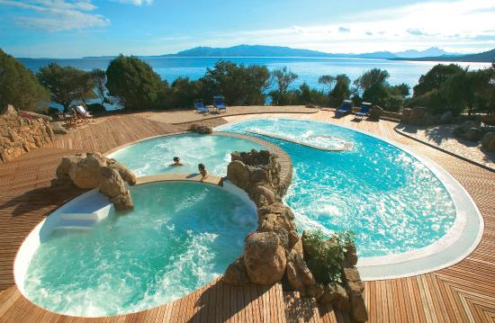
€180–200 pp
Half-day at the Thalasso resort — outdoor saltwater pools cascading toward Caprera, choice of essential-oil massage, lunch on the cliff terrace.
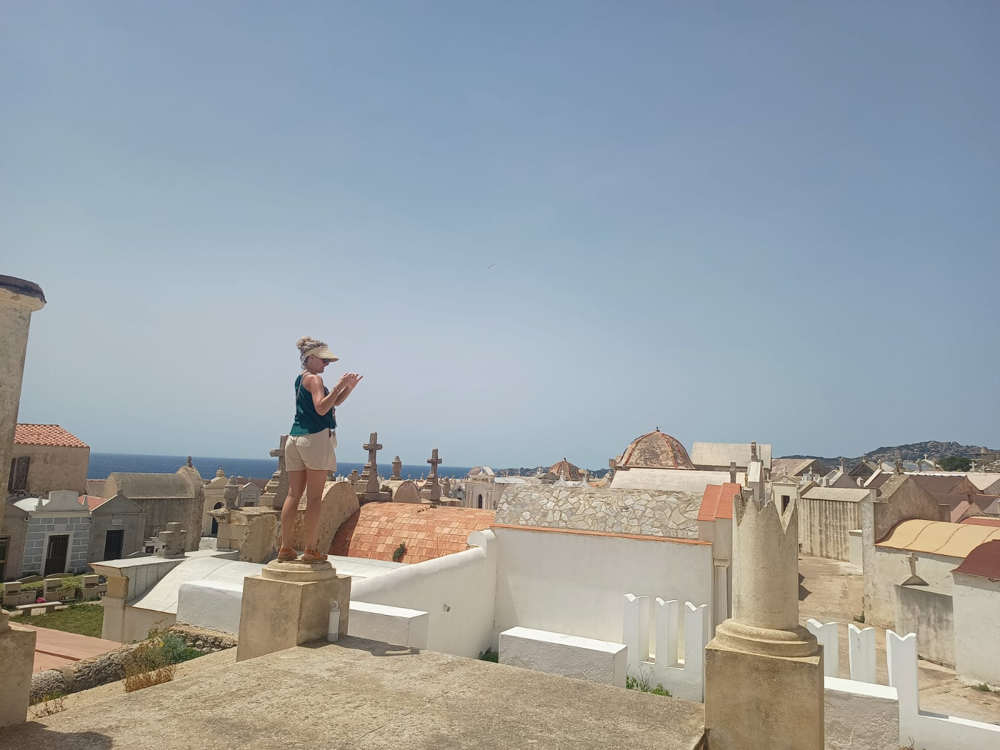
€280 group total · split per guest
Private local guide, 1.5 hours through the medieval citadel — limestone cliffs, the cemetery (one of the most beautiful in the world), the staircase to the water.
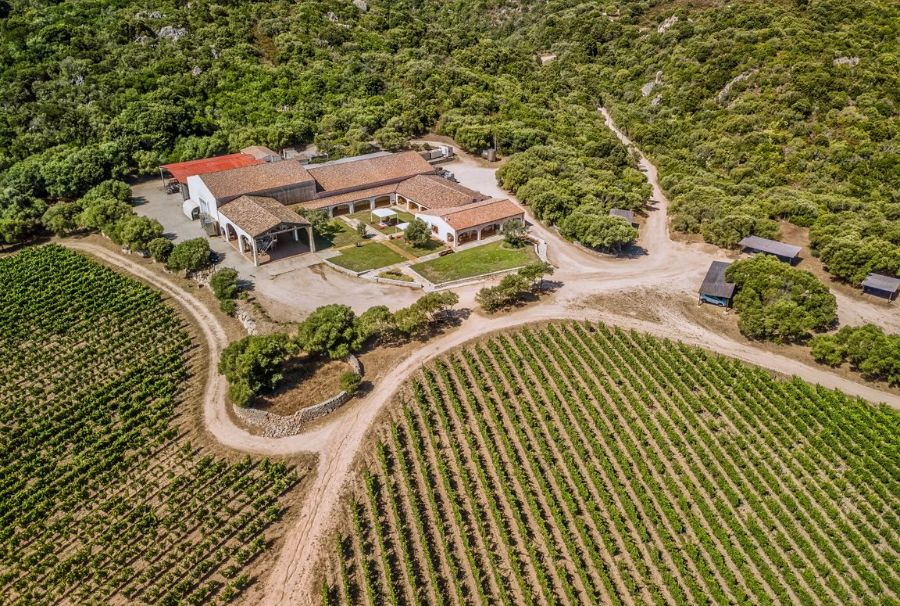
€85 pp · taxi included
Family vineyard near Olbia — cliffside tasting paired with local cheeses and meats, small petting zoo on site. Easy add-on on the return day.
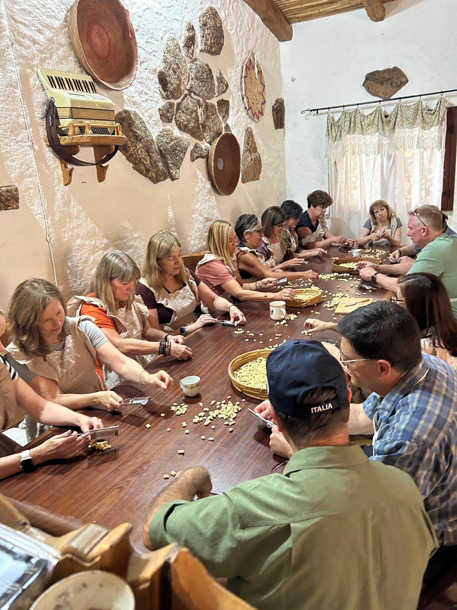
€185 pp · all-inclusive
Full-day in Sardinia's longevity region. Hands-on pasta making with a local family, farm lunch, taxi transfers from the marina included.
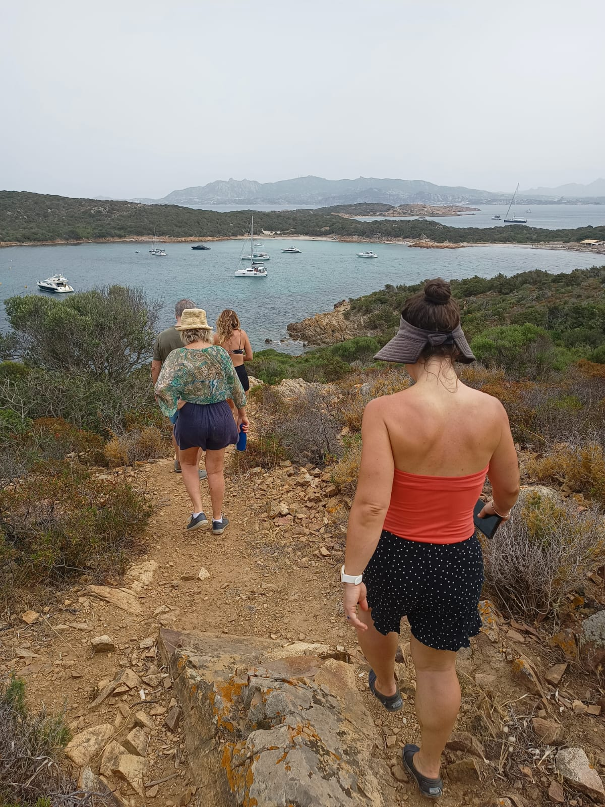
Included in charter
Guided hike on the wildest island in the Maddalena archipelago. Wild flora, granite ridges, viewpoints over the bay — a quiet, simple morning.
Investment
What's included in the charter cost: the boat, captain, on-board chef, breakfast and lunch daily, fuel, marina fees, snorkel sets, paddle boards, yoga mats, and final cleaning.
Not included: excursions (priced separately above), dinners ashore, alcohol beyond paired lunch wines, flights, and travel insurance. Pricing applies to the first week of September 2028 — the open week reserved for this group.
What's Included
Meet the Team
Host · Women Who Explore
Lindsey has built Women Who Explore into a community of 700+ women travellers since acquiring the company in 2020. With 200 ambassadors across the US and Canada and a track record of sold-out trips from Croatia to the Maldives to Egypt, she curates the trips her community actually shows up for.
Captain · Sailing2Wellness
RYA Yachtmaster, four years running curated wellness sailing weeks across Sardinia, Corsica, Croatia, Greece, and Turkey. Vincent skippers the boat and shapes the on-the-water experience — the route, the chef, the rhythm of each day.
Ready to Begin Your Journey?
Express interest below and Lindsey will be in touch with the next steps for the alumni group launch.
Express Interest